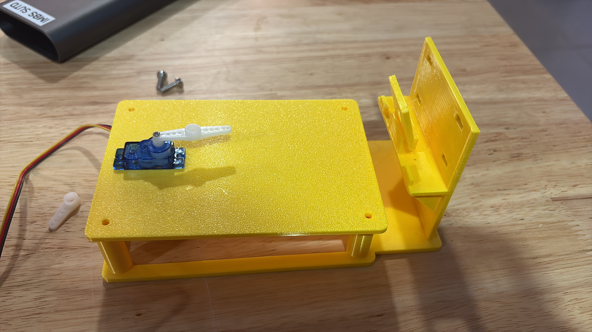

Get started with Miltalk
Your examples.
A machine in motion.
Train the kit, try an experiment and see its predictions drive a mini live simulation project. Start with our recycling sorter below.
Watch an experiment
Teach it to sort.
Give the Vision Kit examples of recyclable and non-recyclable items. Then test a new object and see how the training affects its prediction.
01 · Train
Show it examples of both categories.
Students label examples as recyclable or non-recyclable. The kit uses those examples to learn the difference.
An illustration of the activity. Results on a real kit depend on the examples students provide.
Mini live simulation projects
From a prediction
to a physical action.
Our projects connect the kit’s predictions to small working models of real-world systems. Students can see what their training choices make a machine do.

In development · Recycling sorter
You train the kit.
The servo makes a move.
- Collect and label
Students teach the Vision Kit two categories: recyclable and non-recyclable.
- Connect the prediction
In the sorter project, the kit’s predicted category determines which way the servo motor turns.
- Watch the sorting action
The motor moves the sorting arm. Students see how an incorrect prediction could send an item the wrong way.
We are building and testing this project now. Ask us about its availability for your session.
Projects with a purpose
Connect an experiment to a bigger question.
We design project themes around different UN Sustainable Development Goals. The recycling sorter links to SDG 12: Responsible Consumption and Production, opening a discussion about waste, recycling and the effect of a sorting mistake.
About the product
A few practical questions.
What is Miltalk?
Miltalk is a set of handheld learning kits that students train with their own examples. They choose two categories, collect data and test the kit’s predictions.
What is the difference between the two kits?
The Vision Kit has a camera and learns from pictures. The Audio Kit has a microphone and learns from sounds.
Who is it designed for?
Our activities are designed for students aged 12 to 15 in schools and community groups.
What are the simulation projects?
They are small working models that connect a kit’s prediction to an action. Our servo motor recycling sorter is one project currently in development.
How can our school try Miltalk?
Send us an enquiry with your year group, student numbers and available time. We will discuss the activities, kits, facilitation and pricing for your session.
Build an experiment with us
Bring your class into the loop.
Tell us what your students are exploring and we can discuss a Miltalk session around it.
Enquire about a session